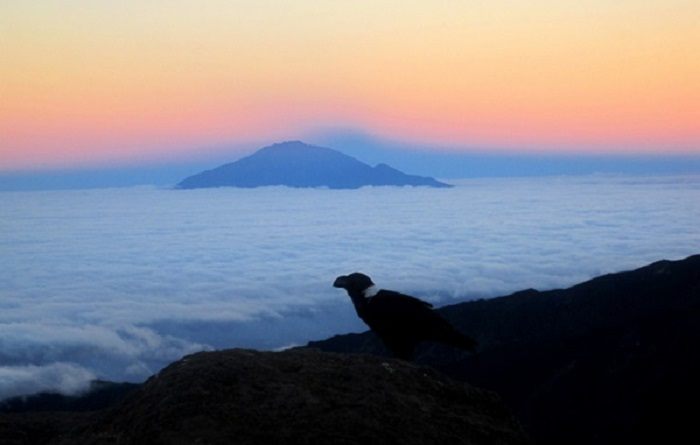

首先小爱给大家发一张梅鲁火山的名片吧，你们先大概认识下。
简介
梅鲁火山坐落在哪里？当然是非洲的坦桑尼亚，它是非洲第十大高山，同样也是坦桑尼亚最高的火山（小爱也想去体验一下火山）。 距离梅鲁火山东部约70公里处的不是别山，正是鼎鼎大名的非洲之巅——乞力马扎罗山！因此，在天气晴朗时，你在乞力马扎罗山上可以自由地欣赏梅鲁火山，想看多久看多久，就是这么任性~~
气候
梅鲁火山虽然地处热带，但受到季风与高海拔的影响，气温不高反而温暖湿润，正因如此，梅鲁火山是一个全年都适合旅游的圣地，大家不用担心被“烤焦”喽。
形状
梅鲁火山的形状真的很特殊，你们看它像啥（见下图）？ 大家应该心中都有了各自的答案。小爱觉得像一只大碗（像吗？？只能想到大碗啦），。或者像一个露天剧场？（明明就是个大坑嘛，嘘！）
动植物资源
在气候中提到，梅鲁火山全年温和湿润，正因为这样的好气候，梅鲁火山的土地异常肥沃，因此，这里有繁盛的草原与森林，其中包括常见的椰子树，腰果树，芒果树，木瓜树……总之，多到小爱数不过来~不仅植物茂密，野生动物也喜欢在这里生活，比如猴子，美洲豹，蓝小羚羊，果蝠等。这么好的地方连鸟儿也钟爱啊，据说梅鲁火山生活着400多种鸟类。小爱想想要是能去一趟梅鲁火山，看到的该是怎样生机勃勃的画面呢？（幻想中~~）
科普
这种涨姿势的内容小爱一般不轻易外泄的，你们都是好人所以小爱就无偿跟你们分享一下，方便大家以后在朋友面前装一下那啥。
- 梅鲁火山是阿鲁沙国家公园的地形核心
- 梅鲁火山最近一次喷发是在1910年（记不得具体数字不要紧啊，就记100多年前）
- 一战期间，曾被德国占领
这些都知道了，你离百科全书还会远吗？
介绍完了梅鲁火山是不是心痒痒了？别忘了小爱的建议！如果没有高海拔徒步的经历，担心登乞力马扎罗山会有高原反应的童鞋，不妨去梅鲁火山练练脚。
如果你觉得这篇博客有趣而且对你有帮助，请分享给你的朋友， 让他们也一起涨姿势哦。